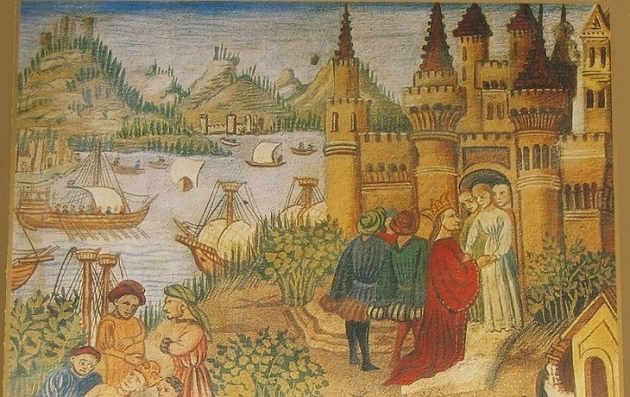

EcoHistory
EcoHistory
Acontecimentos Históricos
Filtre por período ou pesquise pelo título para encontrar eventos.
Queda do Império Romano do Ocidente

O fim do Império Romano do Ocidente em 476 d.C. marcou o início da Idade Média.
Revolução Francesa

Movimento social e político que transformou a França e influenciou o mundo no final do século XVIII.
Primeira Guerra Mundial

Conflito global ocorrido entre 1914 e 1918, envolvendo as principais potências mundiais.
Segunda Guerra Mundial

Maior conflito armado da história, ocorrido entre 1939 e 1945.
Revolução Industrial
Período de grandes transformações tecnológicas, econômicas e sociais iniciado no século XVIII.
Muro de Berlim
Símbolo da Guerra Fria, separou Berlim entre 1961 e 1989.
Primavera Árabe

Movimento de protestos e revoltas que ocorreram no mundo árabe a partir de 2010.
Surgimento das Universidades
As primeiras universidades surgiram na Europa durante a Idade Média, promovendo o conhecimento.